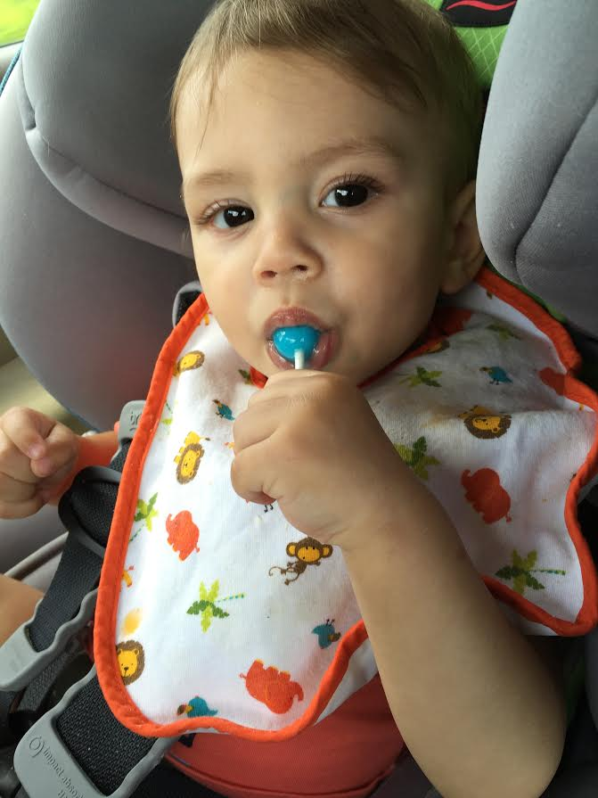

Hi,I'm Nathan. I am currently attending Bartlett High School as a senior. And I have a son named Sammy. He is my pride and joy and i love bliff. I plan to attend the Universtity of Memphis in the fall and major in Business Information and Technology, with a minor in Political Science. I currently am an associate trainer at Panera Bread and am a father of my one year old son, Samuel.
